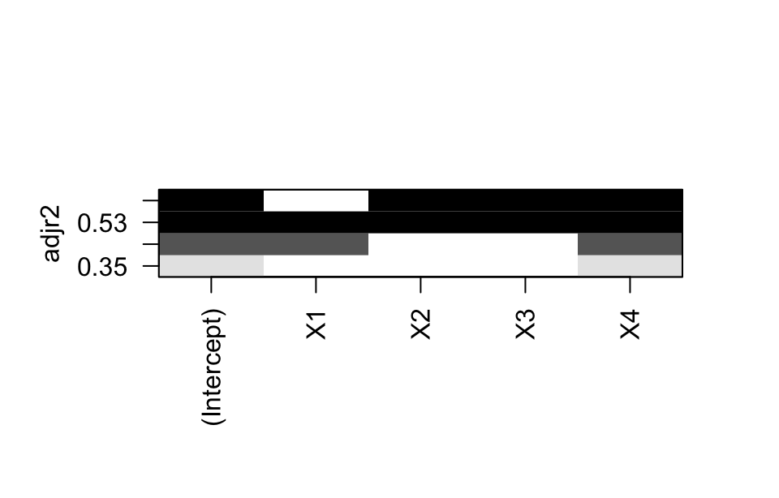
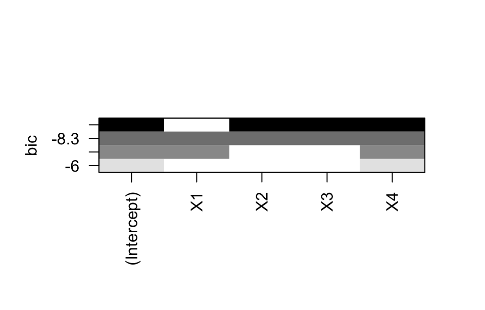
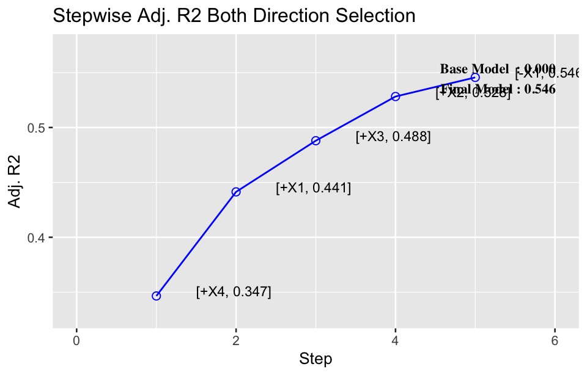
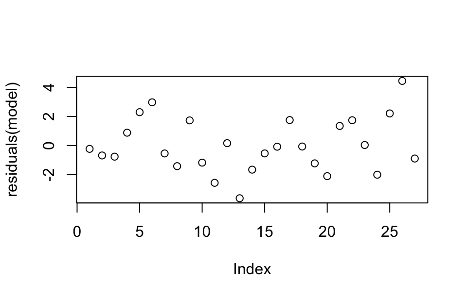

library(tidyverse)
library(lm.beta)
library(equatiomatic)
library(leaps)
library(glmnet)
library(MASS)
library(olsrr)
library(lmtest)
library(sandwich)18 Multiple linear regression analysis
Multiple linear regression is a statistical technique used to model the relationship between one dependent (response) variable and two or more independent (predictor) variables. It extends simple linear regression, which only considers one predictor variable, to situations where multiple variables contribute to predicting the outcome.
18.1 Prerequisite
18.2 Multiple linear regression
18.2.1 Multiple linear regression model
The general form for multiple linear regression model is:
Y = \beta_0 + \beta_1X_1 + \beta_2X_2 + \cdots + \beta_nX_n + \epsilon
where Y is the dependent variable, X_1, X_2, …, X_n are the independent variables, \beta_0 is the intercept (the value of Y when all X’s are zero), \beta_1, \beta_2, …, \beta_n are the coefficients for each independent variable, \epsilon is the error term.
Multiple minear regression relies on several key assumptions to produce valid results. If these assumptions are violated, the model’s results may be biased or misleading. Here are the primary assumptions:
- The relationship between the dependent and independent variables must be linear.
- Observations should be independent of each other.
- The variance of the residuals should be constant across all levels of the independent variables.
- The residuals (errors) should be normally distributed.
18.2.2 Estimating regression coefficients
To estimate the regression coefficients \beta_0, \beta_1, \dots, \beta_n, use statistical software to fit the model to your data. This process minimizes the sum of the squared differences between the observed and predicted values (ordinary least squares, or OLS). The OLS estimator for \boldsymbol{\beta} is:
\hat{\boldsymbol{\beta}} = (\mathbf{X}^T \mathbf{X})^{-1} \mathbf{X}^T \mathbf{Y}
This formula minimizes the sum of squared residuals and provides the best linear unbiased estimates of the coefficients under the assumptions of the classical linear regression model.
Example 1:
Given the measurements of total serum cholesterol (X1), triglycerides (X2), fasting insulin (X3), glycated hemoglobin (X4), and fasting blood glucose (Y) from 27 diabetic patients, establish a multiple linear regression equation for fasting blood glucose with the other indicators.
df <- read_csv("datasets/ex18-01.csv", show_col_types = F)You can use lm() function to perform the regression analysis, with Y as the dependent variable and X1, X2, X3, X4 as the independent variables.
model <- lm(Y ~ X1 + X2 + X3 + X4, data = df)
coef(model)#> (Intercept) X1 X2 X3 X4
#> 5.9432678 0.1424465 0.3514655 -0.2705853 0.6382012The code can also be written as:
model <- lm(Y ~ ., data = df)
coef(model)#> (Intercept) X1 X2 X3 X4
#> 5.9432678 0.1424465 0.3514655 -0.2705853 0.6382012You can use the coef() function to extract regression coefficients from the model. The extract_eq() function from equatiomatic package can extract regression equation from the fitted model:
extract_eq(model, use_coefs = T, coef_digits = 4, font_size = "small") \small \begin{aligned} \operatorname{\widehat{Y}} &= 5.9433 + 0.1424(\operatorname{X1}) + 0.3515(\operatorname{X2}) - 0.2706(\operatorname{X3}) + 0.6382(\operatorname{X4}) \end{aligned}
18.2.3 Evaluating the model
In multiple linear regression, hypothesis tests help evaluate the significance of the model and individual predictors, while assumption tests ensure that the model is reliable. The F-test determines if the model is significant overall, t-tests assess the impact of individual predictors, and R² and adjusted R² indicate the model’s explanatory power. Residual analysis further ensures the validity of the model’s assumptions.
- F-test
- H_0: All regression coefficients are zero, meaning none of the independent variables have a significant effect on the dependent variable.
- H_1: At least one regression coefficient is not zero, indicating that at least one independent variable has a significant effect.
The F-test evaluates the overall significance of the model. The formula for the F-statistic is:
F = \frac{MSR}{MSE} = \frac{\text{Mean Square Regression}}{\text{Mean Square Error}}
If the F-value is large and the p-value is small (typically < 0.05), reject the null hypothesis, suggesting the model is statistically significant.
- t-test
- H_0: A particular regression coefficient is zero, indicating that the corresponding independent variable has no significant effect on the dependent variable.
- H_1: The regression coefficient is not zero, implying the independent variable has a significant effect.
The t-test for each coefficient is used to assess whether each predictor significantly contributes to the model:
t = \frac{\hat{\beta}_i}{SE(\hat{\beta}_i)}
where \hat{\beta}_i is the estimated coefficient, and SE(\hat{\beta}_i) is the standard error.
If the t-value is large and the p-value is small (typically < 0.05), reject the null hypothesis, indicating that the variable has a significant effect on the dependent variable.
- Goodness of fit
R^2 (Coefficient of determination)
This indicates the proportion of variance in the dependent variable explained by the independent variables. It ranges from 0 to 1, with higher values suggesting a better fit. The R^2 is defined as:
R^2 = 1 - \frac{SS_{\text{residuals}}}{SS_{\text{total}}}
where SS_{\text{residuals}} denotes the sum of squared residuals (errors), i.e., the unexplained variance, SS_{\text{total}} is the total sum of squares, i.e., the total variance of the dependent variable.
Adjusted R^2
It is formulated as:
\text{adjusted } R^2 = 1 - \left( \frac{(1 - R^2)(n - 1)}{n - p - 1} \right)
where n is the number of observations, p is the number of predictors (independent variables). This adjustment penalizes models that include too many predictors that don’t contribute to a better fit. A higher adjusted R² indicates a model with strong explanatory power and parsimony.
R (Multiple correlation coefficient)
This measures the strength of the linear relationship between a set of independent variables (predictors) and a dependent variable in a multiple linear regression model. The R is calculated as:
R = \sqrt{R^2}
where R^2 is the coefficient of determination.
Here summary() is used to produce result summaries of the results from the model fitting functions.
summary(model)#>
#> Call:
#> lm(formula = Y ~ ., data = df)
#>
#> Residuals:
#> Min 1Q Median 3Q Max
#> -3.6268 -1.2004 -0.2276 1.5389 4.4467
#>
#> Coefficients:
#> Estimate Std. Error t value Pr(>|t|)
#> (Intercept) 5.9433 2.8286 2.101 0.0473 *
#> X1 0.1424 0.3657 0.390 0.7006
#> X2 0.3515 0.2042 1.721 0.0993 .
#> X3 -0.2706 0.1214 -2.229 0.0363 *
#> X4 0.6382 0.2433 2.623 0.0155 *
#> ---
#> Signif. codes: 0 '***' 0.001 '**' 0.01 '*' 0.05 '.' 0.1 ' ' 1
#>
#> Residual standard error: 2.01 on 22 degrees of freedom
#> Multiple R-squared: 0.6008, Adjusted R-squared: 0.5282
#> F-statistic: 8.278 on 4 and 22 DF, p-value: 0.0003121From the result summaries, we can find that the overall model is statistically significant (F-statistic is 8.278, p < 0.001), indicating that at least one of the predictors is related to the fasting blood glucose.
X1 (t=0.390, p=0.7006) and X2 (t=1.721, p=0.0993) are not statistically significant predictors, X3 (t=0-2.229, p=0.0363) and X4 (t=2.623, p=0.0155) are significant in this model.
The R^2 = 0.6008, this indicates that approximately 60.08% of the variance in fasting blood glucose is explained by the model, which suggests a moderate fit.
The adjusted R^2 = 0.5282, this indicates after adjusting for the number of predictors, the model explains around 52.82% of the variance.
18.2.4 Standardized partial regression
In multiple linear regression, standardized partial regression coefficients (also known as standardized beta coefficients) are used to compare the relative importance of each predictor variable in the model, as they are measured on the same scale (standard deviations). They are obtained after standardizing both the independent and dependent variables, so that each variable has a mean of zero and a standard deviation of one.
The standardized regression coefficient \beta_i^* is computed as:
\beta_i^* = \beta_i \times \frac{\sigma_{X_i}}{\sigma_Y}
where \beta_iis the unstandardized regression coefficient for the predictorX_i,\sigma_{X_i} is the standard deviation of predictor X_i, \sigma_Y is the standard deviation of the dependent variable Y.
You can obtain standardized coefficients by using the scale() function to standardize the variables before performing the regression. Standardizing ensures that each variable has a mean of 0 and a standard deviation of 1, allowing you to directly interpret the coefficients as standardized coefficients.
scale(df) |>
as_tibble() |>
lm(Y ~ X1 + X2 + X3 + X4, data = _) |>
coefficients()#> (Intercept) X1 X2 X3 X4
#> 6.525869e-16 7.757862e-02 3.093081e-01 -3.394808e-01 3.977418e-01Alternatively, the lm.beta package provides a convenient lm.beta() function that takes an ordinary linear model and returns the standardized coefficients directly.
lm.beta(model) |> coef()#> (Intercept) X1 X2 X3 X4
#> NA 0.07757862 0.30930814 -0.33948078 0.39774184In a standardized regression model, the intercept is typically not interpreted because it is not directly comparable to the other variables after standardization. Therefore, it is shown as NA in the output of lm.beta(). Among the predictors, X4 has the strongest positive effect on Y, followed by X2. X3 has a significant negative impact on Y, while X1 has a relatively small effect.
18.3 Independent variable selection
The selection of independent variables refers to the process of choosing the most significant predictors (independent variables) to construct a model in multiple regression analysis or other predictive models. By selecting independent variables, you can improve the model’s prediction performance, simplify the model, and reduce the risk of overfitting. Common methods for independent variable selection include:
18.3.1 All-subsets regression
All-subsets regression (also called best subset regression) is a method that evaluates all possible subsets of the predictor variables in order to identify the best model or models. This approach is exhaustive, meaning it fits regression models for every possible combination of predictors and selects the one(s) based on specific criteria like adjusted R^2, AIC, BIC, or Mallow’s C_p.
Adjusted R^2
Adjusted R^2 is a modified version of the R^2 that adjusts for the number of predictors (independent variables) in a regression model. Unlike the regular R^2, which always increases when new predictors are added, Adjusted R^2 compensates for the model complexity, ensuring that only significant predictors improve the model’s fit.
Akaike information criterion (AIC)
AIC is based on information theory and estimates the relative quality of statistical models for a given dataset. It provides a measure of the goodness of fit while penalizing for the number of parameters in the model.
The formula for AIC is:
AIC = 2k - 2\log(L)
where k is the number of parameters in the model, L is the likelihood of the model (how well the model fits the data). Among competing models, the one with the lowest AIC is preferred.
Bayesian information criterion (BIC)
BIC is similar to AIC but includes a stronger penalty for the number of parameters, especially as the sample size increases. BIC is derived from a Bayesian perspective and is more conservative in model selection compared to AIC.
The formula for BIC is:
BIC = k\log(n) - 2\log(L)
where k is the number of parameters in the model, n is the sample size, L is the likelihood of the model. Like AIC, a lower BIC value indicates a better model.
Mallow’s C_p
Mallows’ C_p is a statistical criterion used for model selection in regression analysis. It helps identify models that offer a good balance between complexity (number of predictors) and goodness of fit. Specifically, it is used to compare regression models with different numbers of predictors to select the one that is neither underfitting nor overfitting the data.
Mallows’ C_p is defined as:
C_p = \frac{\text{RSS}_p}{\hat{\sigma}^2} + 2p - n
where \text{RSS}_p is the residual sum of squares for the model, \hat{\sigma}^2 is an estimate of the true error variance, p is the number of parameters in the model (including the intercept), n is the number of observations.
- If C_p \approx p: The model is considered to have an appropriate number of predictors. The C_p value should be close to the number of predictors in the model.
- If C_p > p: This suggests that the model is overfitting, meaning it’s too complex and is fitting the noise in the data.
- If C_p < p: This suggests that the model is underfitting, meaning it’s too simple and is missing important predictors.
In practice, the goal is to find the model with the lowest C_p that is close to p.
Example 2:
Use the all-subsets regression method to select the independent variables of the data in Example 1.
The regsubsets() function from leaps package is a tool primarily used for performing best subset selection in regression analysis. It helps identify the best-fitting model with a given number of predictors by comparing all possible subsets of predictors based on specific criteria like Adjusted R-squared, AIC, BIC, etc.
model <- regsubsets(Y ~ ., data = df, nbest = 1, method = "exhaustive")
summary(model)#> Subset selection object
#> Call: regsubsets.formula(Y ~ ., data = df, nbest = 1, method = "exhaustive")
#> 4 Variables (and intercept)
#> Forced in Forced out
#> X1 FALSE FALSE
#> X2 FALSE FALSE
#> X3 FALSE FALSE
#> X4 FALSE FALSE
#> 1 subsets of each size up to 4
#> Selection Algorithm: exhaustive
#> X1 X2 X3 X4
#> 1 ( 1 ) " " " " " " "*"
#> 2 ( 1 ) "*" " " " " "*"
#> 3 ( 1 ) " " "*" "*" "*"
#> 4 ( 1 ) "*" "*" "*" "*"Use the plot() function to visualize different scale values for the model.
plot(model, scale = "adjr2") # adjusted R²
plot(model, scale = "Cp") # Mallow's Cp
plot(model, scale = "bic") # BIC

Find the best model based on a specific criteria:
which.max(summary(model)$adjr2)#> [1] 3which.min(summary(model)$cp)#> [1] 3which.min(summary(model)$bic)#> [1] 3Print the selected variables:
# Find the model with the largest adjustment R²
max_adjr2_index <- which.max(summary(model)$adjr2)
cat("The model with the maximum adjusted R² is at index:", max_adjr2_index, "\n")#> The model with the maximum adjusted R² is at index: 3# Gets the variables selected in the model
selected_vars <- summary(model)$which[max_adjr2_index, ]
selected_vars#> (Intercept) X1 X2 X3 X4
#> TRUE FALSE TRUE TRUE TRUE# Print the selected variables
selected_vars_names <- names(selected_vars)[selected_vars]
cat("The selected variables in the best model (with maximum adjusted R²):", paste(selected_vars_names, collapse = ", "), "\n")#> The selected variables in the best model (with maximum adjusted R²): (Intercept), X2, X3, X4Although this method is likely to find the best-fitting model, its computational complexity increases sharply with the increase of the number of independent variables, so it is usually only suitable for the case of a small number of independent variables in practical application.
18.3.2 Stepwise regression
The stepwise regression is a method for selecting the most significant variables in a regression model by adding or removing predictor variables based on specific criteria (e.g., AIC, BIC, p-values). There are three common types of stepwise regression:
- Forward selection: Starts with no predictors and adds the most significant predictor at each step.
- Backward elimination: Starts with all predictors and removes the least significant predictor at each step.
- Stepwise selection: A combination of forward selection and backward elimination where predictors can be added or removed at each step based on their significance.
The step() function in base R is the most commonly used function for performing stepwise regression based on AIC.
# Fit a full model
full_model <- lm(Y ~ X1 + X2 + X3 + X4, data = df)
# Perform stepwise regression using AIC (default)
stepwise_model <- step(full_model, direction = "both")#> Start: AIC=42.16
#> Y ~ X1 + X2 + X3 + X4
#>
#> Df Sum of Sq RSS AIC
#> - X1 1 0.6129 89.454 40.343
#> <none> 88.841 42.157
#> - X2 1 11.9627 100.804 43.568
#> - X3 1 20.0635 108.905 45.655
#> - X4 1 27.7939 116.635 47.507
#>
#> Step: AIC=40.34
#> Y ~ X2 + X3 + X4
#>
#> Df Sum of Sq RSS AIC
#> <none> 89.454 40.343
#> + X1 1 0.613 88.841 42.157
#> - X3 1 25.690 115.144 45.159
#> - X2 1 26.530 115.984 45.356
#> - X4 1 32.269 121.723 46.660# View the summary of the final model
stepwise_model#>
#> Call:
#> lm(formula = Y ~ X2 + X3 + X4, data = df)
#>
#> Coefficients:
#> (Intercept) X2 X3 X4
#> 6.4996 0.4023 -0.2870 0.6632extract_eq(stepwise_model, use_coefs = T, coef_digits = 4, font_size = "small") \small \begin{aligned} \operatorname{\widehat{Y}} &= 6.4996 + 0.4023(\operatorname{X2}) - 0.287(\operatorname{X3}) + 0.6632(\operatorname{X4}) \end{aligned}
You can use the stepAIC() function from the MASS package, which works similarly to step() but is more flexible.
stepwise_model <- stepAIC(full_model, direction = "both")#> Start: AIC=42.16
#> Y ~ X1 + X2 + X3 + X4
#>
#> Df Sum of Sq RSS AIC
#> - X1 1 0.6129 89.454 40.343
#> <none> 88.841 42.157
#> - X2 1 11.9627 100.804 43.568
#> - X3 1 20.0635 108.905 45.655
#> - X4 1 27.7939 116.635 47.507
#>
#> Step: AIC=40.34
#> Y ~ X2 + X3 + X4
#>
#> Df Sum of Sq RSS AIC
#> <none> 89.454 40.343
#> + X1 1 0.613 88.841 42.157
#> - X3 1 25.690 115.144 45.159
#> - X2 1 26.530 115.984 45.356
#> - X4 1 32.269 121.723 46.660stepwise_model#>
#> Call:
#> lm(formula = Y ~ X2 + X3 + X4, data = df)
#>
#> Coefficients:
#> (Intercept) X2 X3 X4
#> 6.4996 0.4023 -0.2870 0.6632extract_eq(stepwise_model, use_coefs = T, coef_digits = 4, font_size = "small") \small \begin{aligned} \operatorname{\widehat{Y}} &= 6.4996 + 0.4023(\operatorname{X2}) - 0.287(\operatorname{X3}) + 0.6632(\operatorname{X4}) \end{aligned}
If you want to use other model selection criteria, the olsrr package provides a more intuitive way to perform stepwise regression, with options to perform forward, backward, and stepwise regression.
stepwise_model <- ols_step_both_adj_r2(full_model)
stepwise_model |> plot()
stepwise_model#>
#>
#> Stepwise Summary
#> ------------------------------------------------------------------------
#> Step Variable AIC SBC SBIC R2 Adj. R2
#> ------------------------------------------------------------------------
#> 0 Base Model 137.574 140.166 59.411 0.00000 0.00000
#> 1 X4 (+) 127.028 130.916 49.427 0.37166 0.34653
#> 2 X1 (+) 123.692 128.876 46.765 0.48434 0.44137
#> 3 X3 (+) 122.191 128.670 46.208 0.54705 0.48797
#> 4 X2 (+) 120.780 128.555 46.327 0.60081 0.52823
#> 5 X1 (-) 118.966 125.445 43.998 0.59805 0.54563
#> ------------------------------------------------------------------------
#>
#> Final Model Output
#> ------------------
#>
#> Model Summary
#> ---------------------------------------------------------------
#> R 0.773 RMSE 1.820
#> R-Squared 0.598 MSE 3.889
#> Adj. R-Squared 0.546 Coef. Var 16.537
#> Pred R-Squared 0.365 AIC 118.966
#> MAE 1.460 SBC 125.445
#> ---------------------------------------------------------------
#> RMSE: Root Mean Square Error
#> MSE: Mean Square Error
#> MAE: Mean Absolute Error
#> AIC: Akaike Information Criteria
#> SBC: Schwarz Bayesian Criteria
#>
#> ANOVA
#> -------------------------------------------------------------------
#> Sum of
#> Squares DF Mean Square F Sig.
#> -------------------------------------------------------------------
#> Regression 133.098 3 44.366 11.407 1e-04
#> Residual 89.454 23 3.889
#> Total 222.552 26
#> -------------------------------------------------------------------
#>
#> Parameter Estimates
#> ----------------------------------------------------------------------------------------
#> model Beta Std. Error Std. Beta t Sig lower upper
#> ----------------------------------------------------------------------------------------
#> (Intercept) 6.500 2.396 2.713 0.012 1.543 11.456
#> X4 0.663 0.230 0.413 2.880 0.008 0.187 1.140
#> X3 -0.287 0.112 -0.360 -2.570 0.017 -0.518 -0.056
#> X2 0.402 0.154 0.354 2.612 0.016 0.084 0.721
#> ----------------------------------------------------------------------------------------
stepwise_model[["model"]] |>
extract_eq(use_coefs = T, coef_digits = 4, font_size = "small") \small \begin{aligned} \operatorname{\widehat{Y}} &= 6.4996 + 0.6632(\operatorname{X4}) - 0.287(\operatorname{X3}) + 0.4023(\operatorname{X2}) \end{aligned}
18.4 Application of multiple linear regression and some considerations
18.4.1 Application of multiple linear regression
Multiple linear regression is widely used in medical research for predicting patient outcomes, analyzing the effects of various biological markers on health results, and controlling for confounding variables. Below are several scenarios where MLR is applied in the medical field:
Disease risk prediction
Multiple linear regression can be used to predict disease risk by incorporating multiple biomarkers or clinical variables. For example, factors such as age, weight, cholesterol level, and blood pressure can be used to predict the risk of cardiovascular disease.
lm(heart_disease_risk ~ age + cholesterol + blood_pressure + smoking_status, data = patients_data)Drug efficacy analysis
In clinical trials, multiple linear regression is useful for evaluating the combined effects of multiple factors on drug efficacy. For example, when assessing blood sugar control in diabetic patients, variables such as drug dosage, age, weight, and lifestyle habits can be included to understand their effects on glucose levels.
lm(fasting_glucose ~ drug_dose + age + weight + exercise, data = diabetes_data)Controlling for confounding variables
Confounding factors such as age, gender, or lifestyle can affect the relationships between variables. Multiple linear regression helps control for these confounders by incorporating multiple variables, allowing a more accurate estimation of the primary exposure variable’s effect (e.g., treatment method) on health outcomes.
lm(treatment_effect ~ age + gender + treatment_group, data = clinical_data)Prognostic model construction
Prognostic models are used to predict survival rates or disease outcomes in medical research. Multiple linear regression helps identify significant factors influencing disease progression and uses these factors to build a prognostic model.
lm(survival_time ~ tumor_size + age + treatment_type + physical_activity, data = cancer_data)Correlation analysis of physiological indicators
Multiple linear regression can analyze the relationship between different physiological indicators. For example, it can examine how weight, cholesterol, and blood pressure affect a health outcome, such as kidney or heart function.
lm(kidney_function ~ weight + cholesterol + blood_pressure, data = health_data)
18.4.2 Considerations for multiple linear regression
Multicollinearity: High correlation between independent variables can make the model’s coefficients unstable and inflate standard errors, making it difficult to assess the individual effect of each predictor. Multicollinearity can be assessed using the variance inflation factor (VIF) by
vif()function fromcarpackage.model <-lm(Y ~ X1 + X2 + X3 + X4, data = df) car::vif(model)#> X1 X2 X3 X4 #> 2.185539 1.779862 1.278364 1.266730Normality and independence of residuals: The model assumes that the residuals are independent and normally distributed. Residual plots and tests like the Shapiro-Wilk test can be used to assess this assumption.
residuals(model) |> plot() residuals(model) |> shapiro.test()#> #> Shapiro-Wilk normality test #> #> data: residuals(model) #> W = 0.97835, p-value = 0.8233
Homoscedasticity: The model assumes that the variance of the residuals is constant. If the residual variance is not constant (heteroscedasticity), it can impact the efficiency of the estimates. Residual plots or tests like White’s test can detect heteroscedasticity.
You can use the
bptest()function from thelmtestpackage to conduct a Breusch-Pagan test, a similar test for heteroscedasticity.lmtest::bptest(model) # Breusch-Pagan test for heteroscedasticity#> #> studentized Breusch-Pagan test #> #> data: model #> BP = 6.4508, df = 4, p-value = 0.1679As for White’s test specifically, we defined a custom function named
whites.test():whites.test <- function(model) { # Extract the independent variables in the model terms <- attr(terms(model), "term.labels") # Extract the data used in the model data <- model$model # Create square and interaction terms squared_terms <- sapply(terms, function(term) paste0("I(", term, "^2)")) interaction_terms <- combn(terms, 2, function(x) paste(x, collapse = ":")) # Construct the formula of auxiliary regression model auxiliary_formula <- as.formula( paste( "e2 ~", paste(c(terms, squared_terms, interaction_terms), collapse = " + "))) # Calculate the square of the residual e2 <- resid(model)^2 # Construct auxiliary regression model auxiliary_model <- lm(auxiliary_formula, data = data) # F-test f_statistic <- summary(auxiliary_model)$fstatistic p_value <- pf(f_statistic[1], f_statistic[2], f_statistic[3], lower.tail = FALSE) result <- list( LM_test_statistic = f_statistic[1], df1 = f_statistic[2], df2 = f_statistic[3], p_value = p_value, auxiliary_model = auxiliary_model ) class(result) <- "whites.test" result } # Printing results print.whites.test <- function(x, ...) { cat("White's Test for Heteroskedasticity\n") cat("LM test statistic: ", x$LM_test_statistic, "\n") cat("df1: ", x$df1, "\n") cat("df2: ", x$df2, "\n") cat("p-value: ", x$p_value, "\n") if (x$p_value < 0.05) { cat("Heteroskedasticity is present.\n") } else { cat("No significant heteroskedasticity detected.\n") } }model <- lm(Y ~ X1 + X2 + X3 + X4, data = df) whites.test(model)#> White's Test for Heteroskedasticity #> LM test statistic: 1.838336 #> df1: 14 #> df2: 12 #> p-value: 0.1484346 #> No significant heteroskedasticity detected.If the p-value is small (typically less than 0.05), reject the null hypothesis of homoscedasticity, which means heteroscedasticity is likely present. If White’s test indicates heteroscedasticity, you can use robust standard errors (e.g.,
vcovHC()function from thesandwichpackage) to correct for it:# Use robust standard errors coeftest(model, vcov = vcovHC(model, type = "HC3"))Selection of independent variables: Including too many predictors can lead to overfitting, while excluding important variables can lead to underfitting. Methods like stepwise regression or information criteria (AIC, BIC) can be used to optimize the model.
Outliers and leverage points: The model is sensitive to outliers and high-leverage points, which can disproportionately influence the results. Use diagnostic tools such as standardized residuals and Cook’s distance to identify and handle these points.
Linear relationship assumption: The model assumes a linear relationship between independent variables and the dependent variable. If the relationship is non-linear, transformations or polynomial terms may be needed.
Limitations of Multiple Linear Regression
- Causality: Regression analysis only shows association, not causation.
- Model Interpretability: When there are many predictors, the model may become difficult to interpret, requiring careful variable selection and result explanation.
- Extrapolation: The regression model is generally reliable within the range of the data, but predictions outside of this range may be inaccurate.